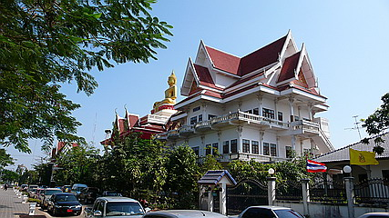

ワットラムダン/ノーンカイ
WａｔLａｍｄｕａｎ/ NongKhai
ノーンカイは川沿いに開けた街である。
その川の向こうはラオス。
オール巨人師匠の息子なら向こう岸まで打ち込めるのではないか、と思える位の幅のメコン川
国境といえば有刺鉄線グルグル巻きでサブマシンガンを持った兵士がウロウロ、サーチライトに監視塔、で、密入国者を発見したらサイレンが鳴って…って東西統合前のベルリンを見に行った身としてはそういうトコロを想像してしまうが、ここはそんな緊張感ゼロ。
のんびりと遊覧船が浮かんでいて時々ボートが行きかうようなどこにでもある風景だ。
そんなどこにでもある風景、かと思ったら川沿いのお寺に大仏が輝いていた。
大仏さんはノーンカイの街に背を向けて鎮座している。つまり川向き、いや、ラオスに向かっているといった方がよい。
これはタイがラオスに向かって国力（というか仏力？）を誇示する為に作ったとしか思えない。
思えば７年前にノーンカイに来た時にはこんなに大きな大仏はなかったので最近作られたものなのだろう。
寺の名前は多分ワットラムダン。
後から地図を見て確認したのでもしかしたら違ってるかもしれないです。

金色に輝く大仏さんは10メートル前後か。
建物の上にあるので大きく見える。
実際、ノーンカイのバスターミナル辺りから見える後姿はかなり大きかった。
お堂の中の壁や天井には様々な絵が描かれていた。
午後なので堂内には誰もいない。
シーンとした本堂の中には目の前のメコン川のようなけだるい時間が流れていた。

大仏近くのメコン川を望む食堂で食べたイサーンの名物料理。
お味はまあまあでした…
北タイへ行くど！
泰国珍寺修行 北へ
珍寺大道場 HOME